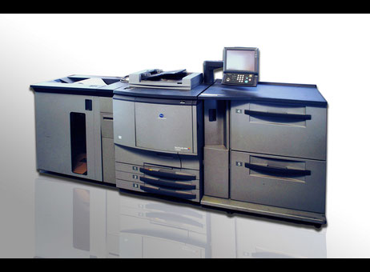

Offset B1+
Nakłady od ok. 200 arkuszy. Cztery formaty arkusza, podłoża powlekane i niepowlekane, uszlachetnianie na miejscu.
Drukarnia · Kraków · od 1995
Offset B1+, druk cyfrowy, CTP i introligatornia w jednym zakładzie. Prowadzimy projekt od przygotowania plików do gotowego nakładu — od 1995 roku.
Wycena bez zobowiązań.

Nie sprzedajemy „wszystkiego”. Skupiamy się na tym, co decyduje o jakości druku: przygotowaniu pliku, maszynie, papierze i wykończeniu.
Nakłady od ok. 200 arkuszy. Cztery formaty arkusza, podłoża powlekane i niepowlekane, uszlachetnianie na miejscu.
Niskie nakłady i pojedyncze sztuki. Personalizacja, szybka realizacja, papier dobrany do projektu.
Przygotowalnia plików i naświetlanie płyt. Preflight, spady, CMYK, rozdzielczość.
Oprawa zeszytowa i miękka, falcowanie, bigowanie, sztancowanie, folia, lakier i UV.

Dobry wydruk zaczyna się przed maszyną. Oglądamy próbki, sprawdzamy plik i dobieramy papier do tego, co ma trafić w ręce odbiorcy — nie do tego, co dobrze wygląda na ekranie.
Cztery etapy, jeden kontakt. Wiesz, co dzieje się z Twoim projektem i kiedy dostaniesz wydruk.
Mówisz, co, na czym i kiedy. Dostajesz cenę i termin.
Sprawdzamy spady, CMYK, rozdzielczość i fonty.
Naświetlamy płyty i drukujemy offsetowo lub cyfrowo.
Introligatornia, uszlachetnianie, odbiór lub wysyłka.

Zaczynaliśmy jako Drukarnia Borgis przy ul. Fabrycznej. Od 2001 roku działamy jako MultiGraf, dziś przy ul. Bagrowej 9 — z własnym studiem DTP, naświetlarnią CTP, offsetem B1+ i introligatornią.
Własne przygotowanie plików, druk i wykończenie pozwalają trzymać jeden standard na każdym etapie. Przy nietypowych projektach sięgamy po sprawdzonych partnerów z branży.
Formaty arkusza offsetowego
A1 594×841 · A1+ 610×860 · B1 700×1000 · B1+ 720×1020 mm
CTP 1030×785 mm
Do ok. 200 arkuszy zwykle taniej wychodzi druk cyfrowy; przy większych nakładach — offset. Dokładną różnicę pokaże wycena: wystarczy podać format, papier i nakład.
Najlepiej PDF/X-4 w CMYK, ze spadem 3 mm i zdjęciami w 300 dpi. Jeśli nie masz takiego pliku — pomożemy w DTP.
Standardowo 5–7 dni roboczych od zatwierdzenia plików. Tryb ekspresowy to 2–3 dni — po potwierdzeniu terminu.
Tak. Pokazujemy próbniki i wykonujemy wydruk próbny, żeby ocenić kolor i podłoże przed pełnym nakładem.
Odbiór przy ul. Bagrowej 9 jest bezpłatny. Wysyłamy Paczkomatem InPost (15 zł do 25 kg) lub kurierem DPD — koszt zależy od wagi.
Wycena z kalkulatora jest orientacyjna i ważna 48 godzin. Ostateczną cenę potwierdza dział sprzedaży po weryfikacji plików.
Napisz kilka słów o formacie, nakładzie i terminie. Wrócimy z propozycją dalszego kroku.
Maciej Ptasiński
607 686 778
mp@multigraf.com.pl
ul. Bagrowa 9
30-733 Kraków
pon.–pt. 8:00–16:00
12 429 30 04